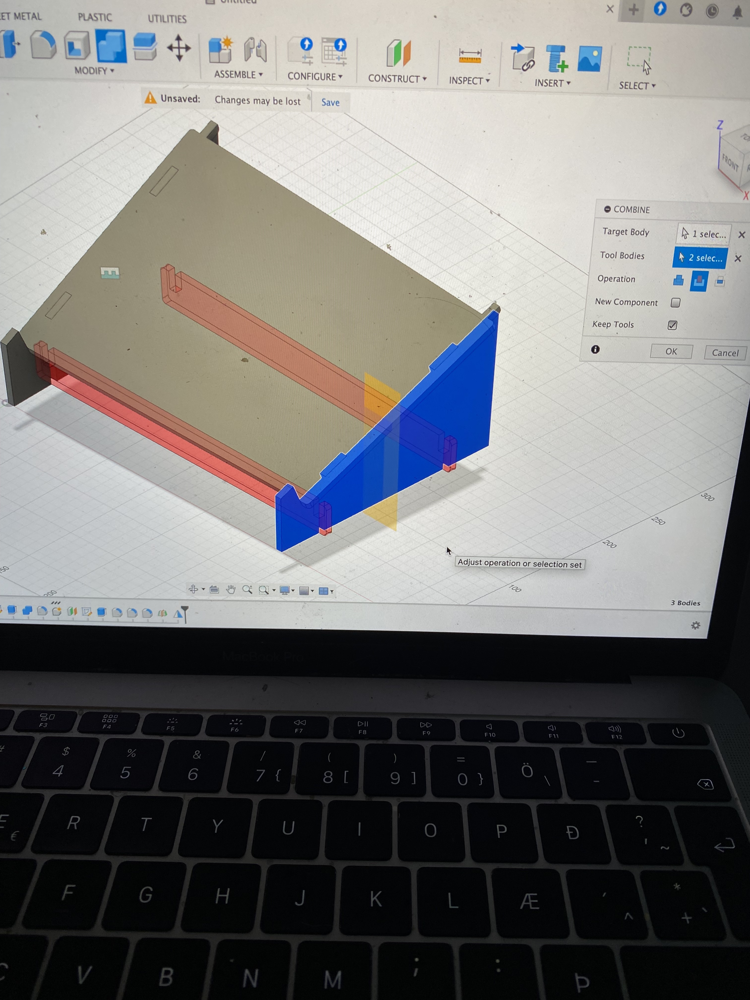

Til baka á forsíðu
Verkefni 2 - Tölvuvædd framleiðsla
Geislaskurður og vínylskurður
Hluti 1: gerð límmiða með vínylskera
Til að hanna límmiða fyrir vínykskerann þá þurfti maður að nota Inskpace. Ég hafði aldrei notað Inkspace áður þannig það fyrsta sem að ég gerði var að horfa á Þetta myndband frá kennara sem sýndi manni hverning á að nota forritið. Hérna er hlekkur fyrir vídjóið. Eftir að hafa horft vel á vídjóið og öðlast grunnskilning á forritinu þá ákvað ég að búa til einfaldann líma með nafni mínu og símanúmeri. Þetta varð fyrir valinu þar sem að ég á það til að týna hlutum og gæti límt þennan límmiða t.d á tölvuna mína þannig ef að hæun týnist þá verður hægt að ná í mig. Útfærslan á gerð límmiðans var afar einföld, en ég notaði einfaldlega text box og skrifaði nafnið mitt, símanúmer, og valdi stærð og letur sem leit vel út og fyllti vel út í síðuna/Canvas, sem var 100x50 mm að stærð samkvæmt verkefnalýsingunni. Í vídjónu hans Hafliða komu svo fram nokkrir hlutir sem þurfti sérstaklega að passa áður en límmiðinn var tilbúin fyrir vínylskerann. Það þurfti í fyrsta lagi að passa upp á að hafa textann á vigra formi en þá var notað "Trace Bitmap" skipunin. Síðan þurfti að fara í stroke stillingar og stilla á no fill, flat coulour og 0.02 mm breidd í stroke style. Þá var allt tilbúið fyrir vínylskerarann og skjalið var vistað sem svg skjal. Sjá má á myndinni fyrir neðan mynd af límmiðanum, en "physical" límmiðin sem ég prentaði út í skeranum týndist því miður.
Hluti 2-1: Kerf-prófun
Marmið með kerf prófun er að komast að þykkt gesialns í geislaskeraranum. Það var byrjað á því að teikna einfalda skurðarferla í fusion og sett inn í inkspace. Svo voru stillingarnar færðar til í inkspace eins og fyrir límmiðan. Hér má sjá mynd af uppstillingunni frá inkscape inn í hugbúnaðinum sem geislaskerarinn les.

Staðsetning skurðar var svo ákvörðuð og breidinn á á geislanum sett í 0.02 mm til að þess að skurðurinn fari í gegnum plötuna. Hér má sjá myndband af geislaskeraranum framvkæmda þetta.
Síðan voru kubbarnir teknir út, settir þétt saman og heildarlengd þeirr mæld.

Sú lengd sem mæld var var L´=93mm. Það voru 11 hliðar skornar og heildarlengdin sem skurðurinn olli var L´-L=1.2 mm og þvermál geislans er því kerf=L´-L/n=1.22/11=0.109mm.
Hluti 2-2: Hönnunarferlið
Ég var afar óviss um hvað ég vildi hanna fyrir geislaskerarann. Ég vissi þó að mig langaði að prófa að nota forritið Fusion 360, því ég hafði aldrei gert það áður. Ég fór því á internetið og leitaði af ,,cool and simple fusion designs,, .Þá skoðaði ég nokkrar myndir og tók eftir mynd af tölvustandi sem mér leist mjög vel á, bæði því hann leit tiltörlega einfaldlega út fyrir byrjanda í fusion og tölvustandur hefur mikið notanagildi, sérstaklega fyrir þá sem eru með lítið skrifborð eins og ég. Ég ákvað því að vera ekkert að flækja málin of mikið og byrjaði að hanna hann með þessa mynd til hliðsjónar

Í fusion var teiknaður grunnur fyrir plplöturnar með sérstaklega áherslu á parametríska hönnun þar sem parametrar voru valdnir t.d fyrir fótaþykkt og hæð.
Það var ákveðið að hafa eitt svokallað finger joint til þess að auka við flatarmálið sem er í snertingu við gólfið. Síðan eru Tvær undirstöðuplötur sem fara í gegnum gat á fótunum og festa þannig neðri hluta standsins saman.(wedge joints) Þetta tryggir að fótarnir renni ekki til og auki burðarþol standsins. Einnig er klassísk press fit tenging fyrir Efri hluti standsins sem þýðir að hann smellur saman með nákvæmri málsetningu. Þetta gerir standinn sterkan og auðveldan í samsetningu án þess að nota aukahluti. Til að framvkæma allt þetta þurfti ég m.a að öðlast mér upplýsingar af internitinu. En aðferðir notaðar voru meðal annars skipanirnar Rectangular pattern, extrude og combine til að setja saman og ,,draga út,,.
Að lokum var svo efni valið innan í fusion sem birkiviður, sem var eitt af mögulegu efnunum frá kennara. Einnig breytti ég parametranum fyrir Þykkt efnisins í 2mm en það var sirka þykktin á efninu sem var í boði. Lokahönnuninina má sjá hérna.
Hluti 2-3: Undirbúningur fyrir framleiðslu
Til þess að gera hönnunina þína tilbúna fyrir geislaskerann þá þurfti að búa til svokallaða DXF skrá þar sem allir partar liggja flatir á sama ás.
Þetta myndband frá kennara var notað til hliðsjónar en það lýsir hverning þú getur notað skipanir í fusion eins og Align, copy og move til að ná þessu á framfæri. Svona leit þetta út hjá mér í Fusion áður en ég vistaði skjalið sem DXF file, tilbúið að vinna með í inkspace.

Skráin var síðan opnuð í Inkspace þar sem auðvelt var að draga alla partann inn á canvasinn sem var stilltur á ,,dimensions,, 500x300 sem var hámarksflatarmál efnisins. Síðan var fylgt sömu skrefum innan í Inkspace og fyrir límmiðan, þ.e allir partar stilltir sem vigrar No fill o.s.f.v
Hluti 2-4: Prófun á festingum og lokaútkoma tölvustandsins
Áður en ég gat byrjað að skera alla partina af tölvustandinum, þá í samræmi við kennara var ákveðið að sniðugast væri að prófa hvort partarnir og festingarnar passa ekki allar saman. Þetta er algengt og mikilvægur hluti af ferlinu þar sem þú vilt reyna að komast hjá því að eyða óþarfa, dýrmætu efni. Prófunin var framvkæmd með því að taka litla búta af pörtum tölvustandins sem áttu að festast saman. Þetta var auðveldlega gert í Inkspace.
Bútarnir voru síðan prentaðir út og settir saman. Þeir pössuðu allir mjög vel saman þannig loks var hægt að fara að prenta út tölvustandinn.
Eins og kom fram var pörtunum öllum raðað saman inn í inskspace canvasinn. Ég hafði svolitlar áhyggjur af því að ég hafði eitthvað misreiknað stærðirnar því ég átti í miklum erfiðleikum með að koma pörtunum öllum saman á canvasinn. En eftir smá púsluspil þá náði ég að raða þeim öllum saman á eftirfarandi hátt.

Hér á neðan má sjá myndskeið af geislaskeranum skera partanna fyrir tölvustandinn, en það tók einungis í kringum 5 mínútur.
Hluti 3: Lokaniðurstöður
Nú var allt tilbúið og geislaskerarinn búinn að skera fyrir okkur tölvustandinn. Ég setti partanna saman og sem betur fer þá pössuðu þeir allir mjög vel. Ég hafði sérstakar áhyggjur af því að hann myndi ekki ná að styðja tölvuna mína en það kom í ljós að það var ekkert mál. Á myndunum að neðan má sjá hverning hann leit út.